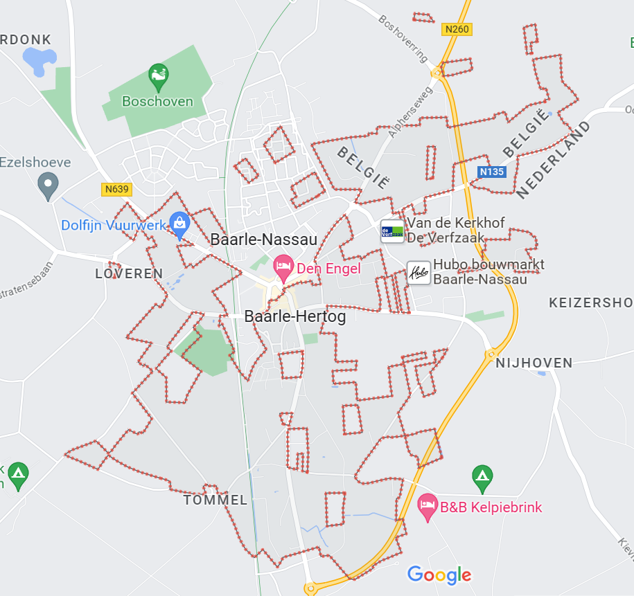

Uniknya Kawasan Perbatasan Belanda dan Belgia (Khususnya antara Baarle-Nassau dan Baarle-Hertog).
Uniknya Kawasan Perbatasan Belanda dan Belgia (Khususnya antara Baarle-Nassau dan Baarle-Hertog). Kota Baarle adalah tempat di mana terdapat batas antara Belanda dan Belgia. Wilayah kota tersebut dalam wilayah Belanda disebut Kota Baarle-Nassau, sedangkan wilayah kota yang masuk Belgia dinamakan Baarle-Hertog. Terdapat tumpang tindih wilayah antar dua negara. Hal ini menyebabkan banyaknya batas negara di tengah toko, kedai kopi, bahkan di dalam rumah penduduk. Tumpang tindihnya batas ini adalah hasil perjanjian kerajaan Belanda dan Belgia abad pertengahan dan diterapkan hingga sekarang. Di dekat batas terdapat tulisan NL untuk NederLand dan B untuk Belgia seperti gambar di bawah ini

Gambair 1.Batas Negara Belanda-Belgia ditandai garis berbentuk tanda tambah dan kode NL untuk Nederland dan B untuk Belgia
Sumber gambar = https://statics.indozone.news/local/63d33bd2219c9.jpg
Selain itu juga bisa dilihat dari nomor rumah, untuk rumah punya orang Belanda, nomor rumahnya berwarna merah putih biru, sedangkan rumah punya orang Belgia diberi warna hitam kuning merah, masing-masing menunjukkan warna bendera negara. (Supriyanto, Yayan. “Melihat Perbatasan Dua Negara Paling Unik dan Rumit di Dunia.” TRAVEL, https://travel.indozone.id/news/951271131/melihat-perbatasan-dua-negara-paling-unik-dan-rumit-di-dunia. Diakses pada 25 Okt. 2023.).
Memiliki batas berupa paving di jalan yang membagi tempat makan beserta rumah. Banyak bangunan berdiri di atas perbatasan antar negara, ini dinamakan anomali geopolitik. Di Baarle-Nassau dan Baarle-Hertog terdapat keunikan yaitu di dalam Baarle-Hertog ada beberapa batas antara Belgia dengan Nederland. Jadi seperti adanya kotak-kotak wilayah kecil Nederland di wilayah Belgia, begitupun dengan kotak-kotak wilayah Belgia berada di wilayah Nederland. Fenomena terpisahnya suatu wilayah dari wilayah utama negaranya dan berada di kawasan perbatasan yang sepenuhnya dikelilingi oleh suatu negara lain secara sederhana dapat disebut dengan Exclave-Enclave (Tasya. “Menyingkap Keunikan Dibalik Perbatasan Belanda-Belgia.” Learn Spatial adn Be Special, https://chartasy.blogspot.com/2022/04/menyingkap-keunikan-dibalik-perbatasan.html. Diakses pada 25 Okt. 2023.). Bersumber dari informasi yang dihimpun dari Waluyanti (2021), terhitung ada 22 daerah Exclave-Enclave Belgia di Belanda dan ada 8 daerah Exclave-Enclave Belanda di Belgia. Sehingga terdapat 30 daerah Exclave-Enclave di Kota Baarle ini.

Gambair 2.Wilayah Kota Baarle
Sumber gambar = https://www.google.co.id/maps/place/Baarle-Nassau,+Netherlands/@51.4437792,4.9288988,14.73z/data=!4m6!3m5!1s0x47c6a5342570ab1d:0x808696d1e9939744!8m2!3d51.4451366!4d4.9295231!16zL20vMHZsM2I?entry=ttu

Gambair 3.Salah Satu Wilayah Exclave-Enclave Belgia di wilayah Nederland
Sumber gambar = https://www.google.co.id/maps/place/Baarle-Nassau,+Netherlands/@51.4437792,4.9288988,14.73z/data=!4m6!3m5!1s0x47c6a5342570ab1d:0x808696d1e9939744!8m2!3d51.4451366!4d4.9295231!16zL20vMHZsM2I?entry=ttu

Gambar 4.Salah Satu Wilayah Exclave-Enclave Nederland di wilayah Belgia
Sumber gambar = https://www.google.co.id/maps/place/Baarle-Nassau,+Netherlands/@51.4437792,4.9288988,14.73z/data=!4m6!3m5!1s0x47c6a5342570ab1d:0x808696d1e9939744!8m2!3d51.4451366!4d4.9295231!16zL20vMHZsM2I?entry=ttu
Geografi yang memusingkan itu dimulai pada abad pertengahan ketika bidang-bidang tanah dibagi di antara keluarga bangsawan. Baarle-Hertog pernah menjadi miliki Pangeran Brabant, sementara Baarle-Nassau merupakan properti milik Dinasti Nassau. (Eames, Andrew. “Berbagai keanehan di perbatasan Belanda dan Belgia.” BBC NEWS INDONESIA, https://www.bbc.com/indonesia/vert-tra-42451675. Diakses pada 25 Okt. 2023.). Lalu, ketika Belgia mendeklarasikan kemerdekaan dari Belanda tahun 1831, hubungan Belanda-Belgia menjadi kacau karena rezim setelah terhalang batas yuridiksi. Sampai tahun 1995, batas dua negara sebenarnya masih tidak jelas hingga daerah tak bertuan terakhir di tengah keduanya diberikan untuk Belgia.Namun, justru daerah tak bertuan memiliki kesamaan dengan kota-kota lain di Belanda dengan bangunan terdiri atas dinding bata merah. Permukiman Belanda pada wilayah tersebut terlihat seragam dibanding tempat tinggal warga Belgia. Secara arsitektur area Belgia berbeda. Pembeda kedua wilayah bisa diidentifikasi dari aksen masyarakat saat berbicara. Bahasa Belanda menjadi bahasa penghubung negara Belgia-Belanda. Sedangkan di Belgia bahasa Perancis diajarkan di sekolah. Perbedaan bahasa hingga letak pemukiman orang-orang Belgia mendorong sebagian penduduk Belanda memandang rendah tetangga beda negara mereka. (Eames, Andrew. “Berbagai keanehan di perbatasan Belanda dan Belgia.” BBC NEWS INDONESIA, https://www.bbc.com/indonesia/vert-tra-42451675. Diakses pada 25 Okt. 2023.) Ketika dua negara memiliki jam pulang sekolah yang sama, remaja sering berkelahi. Hal ini diatasi dengan membedakan jam pulang sekolah oleh kesepakatan walikota dan mendirikan klub remaja. Banyak penduduk Baarle-Nassau dan Baarle-Hertog memegang paspor Belgia beserta paspor Belanda, tetapi mereka tetap bisa berdamai. Ketidakjelasan perbatasan Baarle-Nassau dan Baarle-Hertog menarik turis. Namun, tetap saja batas yurisdiksi memicu persoalan yang kompleks terkait infrastruktur, dalam hal izin mendirikan bangunan terkadang rumit. Sesuai perjanjian Schengen, dihapuskan pengawasan perbatasan negara Belgia dan Belanda. Karena kerumitan ini, dibutuhkan bidang ilmu geospasial mencakup geodesi dan geomatika dalam proses penetapan dan penegasan batas wiayah darat atau maritim. Penetapan dan Penegasan Batas Wilayah harus diperhatikan sejak awal. Hal ini untuk menjaga hubungan baik antar wilayah yang saling berbatasan atau menghindari sengketa yang mungkin muncul. Merealisasikan batas wilayah membutuhkan keahlian teknis maupun teknis yang tercakup dalam tahapan dari alokasi-delimitasi-demarkasi-hingga administrasi pengelolaan batas wilayah. Hal yang sangat penting juga yaitu dalam penentuan peta dasar, penentuan koordinat titik, pengukuran, pembuatan peta batas wilayah, dll. Bidang Geospasial menjadi sangat penting dalam hal penentuan posisi akurat dalam penetapan dan penegasan batas wilayah. Hal ini dikarenakan ilmu geospasial berkaitan erat dengan analisis spasial, suatu ilmu pengetahuan dan teknologi yang terkait dengan akuisisi, penyimpanan, pengolahan, penyajian serta penyebaran informasi kebumian. (Tasya. “Menyingkap Keunikan Dibalik Perbatasan Belanda-Belgia.” Learn Spatial adn Be Special, https://chartasy.blogspot.com/2022/04/menyingkap-keunikan-dibalik-perbatasan.html. Diakses pada 25 Okt. 2023). SIG juga salah satu cabang ilmu spasial untuk penyimpanan, pengolahan, penyajian serta penyebaran informasi geospasial yang sekarang sudah berbasis digital sehinga satu dunia bisa mengakses tanpa harus menggunakan perangkat GIS (SIG WEB).